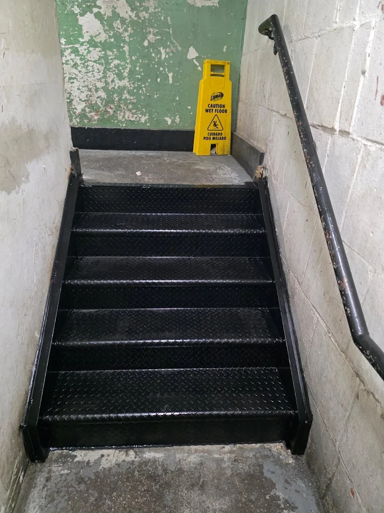

What Makes Brooklyn-Based Steel Fabricators the Right Choice for Bushwick Properties?
Bushwick property owners benefit from working with a Brooklyn-based steel fabricator in several concrete ways. Site visit response time is faster, mobilization costs are lower, and the fabricator's crew is familiar with parking and site-access conditions that are specific to Bushwick's block configurations. More significantly, a Brooklyn steel fabricator's existing relationship with DOB Brooklyn district staff can accelerate permit processing — a meaningful advantage when a project is time-sensitive or when a building has an open violation that needs to be resolved before a lease can close. Steel Masters NYC has navigated Brooklyn's permitting environment for more than fifty years, accumulating the local knowledge that Bushwick property owners directly benefit from on every project.
See why property owners across Brooklyn trust Steel Masters NYC
Steel Masters NYC has been serving Brooklyn's residential and commercial property owners as a trusted steel fabricator since 1972. Located at 135 Liberty Ave in Brooklyn's 11212 ZIP code, the company is well-positioned to serve Bushwick clients in 11221 and 11237 with fast site visits, local permit expertise, and a full-service fabrication and installation crew. Steel Masters NYC designs and installs sidewalk cellar doors, custom steel staircases, Economaster trash bin enclosures, roof railings, expanded metal security, rolldown gates, pipe railings, and structural steel alterations — all fabricated in-house and installed by the company's own trained team.
Visit Steel Masters NYC at 135 Liberty Ave, Brooklyn, NY 11212 or call (888) 577-8335 today

How Do Bushwick's Industrial-to-Residential Conversions Create Unique Steel Fabrication Needs?
Bushwick's converted warehouse and industrial loft buildings present steel fabrication challenges that require experience beyond standard residential work. Large floor plates, high ceiling heights, and non-standard stair configurations in converted buildings demand custom engineering that cannot be sourced from a catalog. Fire egress requirements in converted industrial spaces are particularly demanding, often requiring custom-designed steel staircases with specific tread depth, riser height, and handrail configurations to satisfy both the building's architectural intent and the NYC Building Code. Steel Masters NYC's in-house engineering capability and custom fabrication shop allow the company to produce purpose-designed components for Bushwick's converted buildings — solutions that a less experienced contractor could not deliver.
Which Steel Services Are Most in Demand Among Bushwick Residents and Building Owners?
The most frequently requested steel fabrication services in Bushwick reflect the neighborhood's mix of building types and renovation activity. Sidewalk cellar doors are a priority for building owners addressing DOB compliance requirements or replacing deteriorated existing doors on commercial storefronts along Flushing Ave and Myrtle Ave. Custom interior staircases are in high demand from renovation clients upgrading loft buildings and brownstones. Steel trash bin enclosures — fabricated using Steel Masters NYC's Economaster system — are sought by commercial property owners addressing sanitation code requirements. Roof railings and parapet guards are regularly installed on Bushwick rooftops where rooftop access has been added as an amenity for residential tenants. commercial steel fabrication NYC

How Does a Local Steel Fabricator Navigate Bushwick's DOB Permit Requirements?
Permit filing for steel fabrication work in Bushwick follows Brooklyn DOB procedures that experienced local contractors know well. Applications must include site-specific shop drawings, structural calculations where required, and proof of contractor licensing and insurance. Progress inspections must be scheduled in advance, and final inspections require the contractor's representative to be present at the site. A Brooklyn-based steel fabricator like Steel Masters NYC manages this entire process in-house — from initial filing through final sign-off — reducing the administrative burden on the property owner and minimizing the risk of permit-related project delays. For Bushwick property owners managing active renovation projects, this end-to-end permit management is a significant practical advantage.
How Do Ridgewood and Maspeth Neighbors Access the Same Brooklyn Steel Fabrication Expertise?
Bushwick's border with Ridgewood and proximity to Maspeth means that many property owners just beyond the Brooklyn line seek out Brooklyn-based steel fabricators for the same reasons their Bushwick neighbors do — local expertise, permit familiarity, and the track record that comes from decades of work on comparable building stock. Steel Masters NYC regularly serves clients in these adjacent neighborhoods, extending its full-service steel fabrication capability across the Kings-Queens border. Whether a project involves a cellar door on a Ridgewood rowhouse or a steel staircase in a Maspeth commercial building, the company applies the same custom fabrication approach that has made it the preferred steel fabricator for Bushwick residents and property owners throughout this part of New York City. iron works Brooklyn
What Should Bushwick Property Owners Expect During the Steel Fabrication Process?
Bushwick property owners who engage Steel Masters NYC for a steel fabrication project can expect a clearly sequenced process with regular communication at each stage. The process begins with a site visit and measurement, followed by a written proposal with itemized pricing. Once the proposal is accepted, shop drawings are developed and submitted for permit approval. Fabrication proceeds in the company's Brooklyn shop while the permit is processed. Installation is scheduled once the permit is approved, and a final inspection is arranged to close the permit. Throughout the process, clients receive updates on fabrication progress and installation scheduling. Steel Masters NYC's in-house operation means there are no handoffs to subcontractors — the team that measures is the team that fabricates and installs, producing consistent quality at every stage of the project.
Ready to work with Brooklyn's trusted steel fabricator? Contact Steel Masters NYC at (888) 577-8335
Learn how steel fabrication adds value to Brooklyn properties